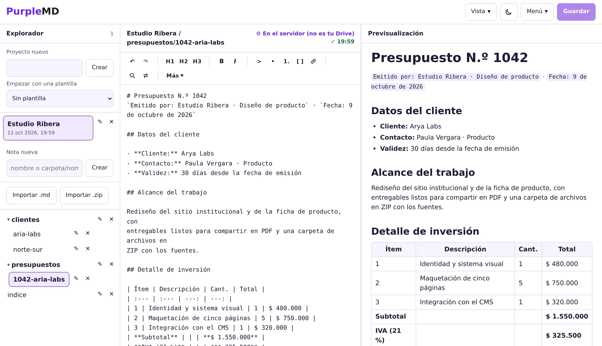
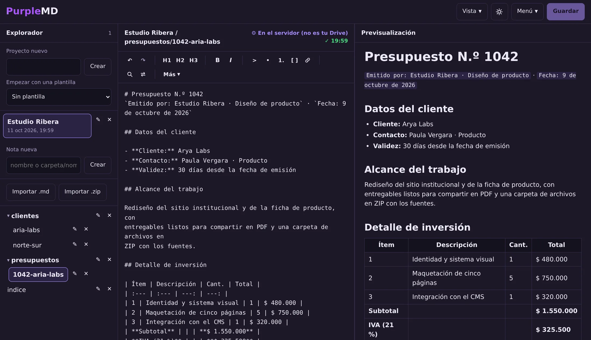
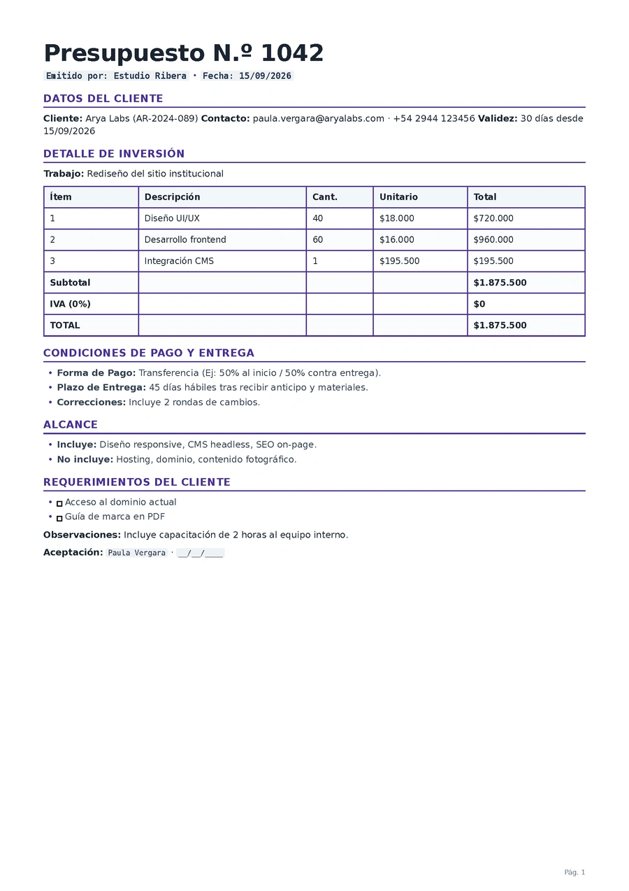

Arya Labs
Contacto: Paula Vergara · Rubro: software.
Trabajo en curso: rediseño del sitio institucional.
Enviar el presupuesto N.º 1042.
Purple crea herramientas directas de usar y cuidadas en los detalles, pensadas alrededor de cómo trabajan las personas. La primera es PurpleMD, un editor Markdown que te sigue el ritmo.
PurpleMD
Vista previa en vivo mientras escribís, proyectos organizados y exportación a PDF o ZIP cuando el documento está listo.


Editá Markdown y consultá la vista previa mientras trabajás. Guardás cuando querés, con Ctrl/Cmd + S.
Carpetas anidadas dentro de cada proyecto, con árbol plegable e importación desde archivos .md o .zip.
El servidor MCP integrado deja que una herramienta compatible lea y organice tus notas desde tu propio flujo.
Servidor MCP
Conectá PurpleMD con un cliente compatible con MCP y llevá el contexto de tus notas a donde ya trabajás: resumir, buscar y retomar ideas sin cambiar de aplicación.
Contacto: Paula Vergara · Rubro: software.
Trabajo en curso: rediseño del sitio institucional.
Enviar el presupuesto N.º 1042.
¿Qué falta con Arya Labs y en qué estado está el presupuesto?
Falta enviar el presupuesto N.º 1042, por $ 1.875.500 con IVA, y agendar el kickoff. El trabajo en curso es el rediseño del sitio institucional.
Leído en tus notas de PurpleMD.
Ejemplo ilustrativo. PurpleMD expone tus proyectos y notas —leer, buscar, crear y mover— a clientes compatibles con el protocolo MCP.
Ver la documentación de MCP (se abre en una pestaña nueva)Exportación
Convertí tus documentos Markdown en PDF bien presentados, con una estructura clara y una lectura cuidada.

Desde el menú, Exportar .pdf. Títulos, listas, tablas y bloques de código con jerarquía clara, numeración de páginas y un pie propio.
Exportá el proyecto completo en .zip para guardarlo o
llevarlo a donde quieras.
¿Necesitás un PDF con un diseño particular? Hablemos (se abre en una pestaña nueva).